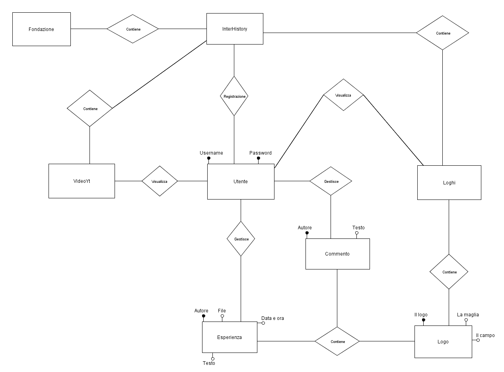
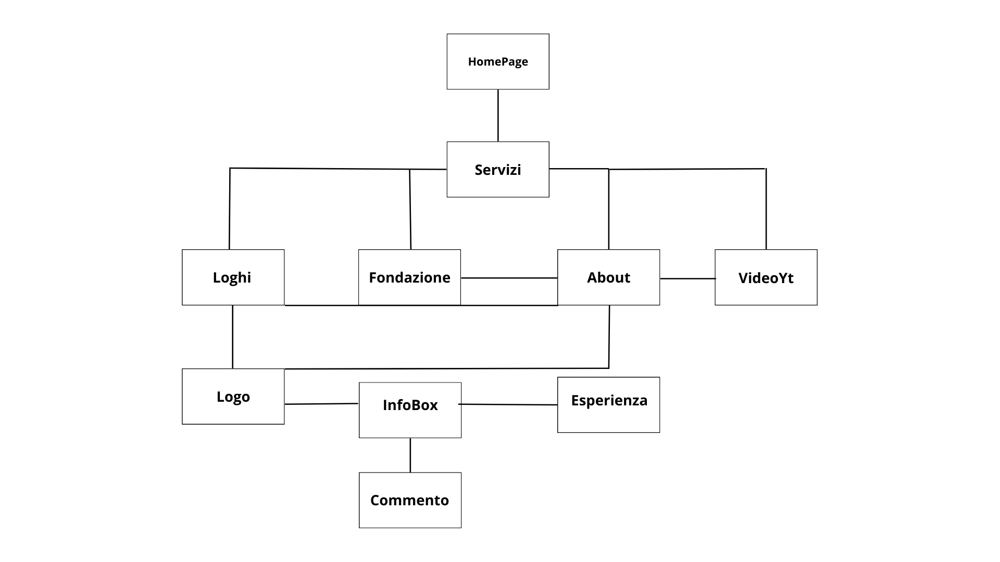

About InterHistory
IDEA
L’idea è stata quella di realizzare una web application che permettesse agli utenti di usufruire di una raccolta interattiva degli stemmi storici dell’inter. Il sito mostra i 15 stemmi dal 1908 ad oggi e una sezione introduttiva che racconta la nascita del clubattraverso immagine storiche dei fondatori.
L’applicazione è sviluppata per garantire un accesso facile e veloce ai contenuti che interessano all’utente; nella landing page
l’utente può:
- accedere o registrarsi tramite il formo di autentificazione;
- esplorare la sezione loghi;
- consultare la storia della fondazione.
Una volta effettuato il login (gestito via localStorage) la home apparirà nello stesso modo ma una volta cliccato sul logo scelto
sarà possibile commentare e raccontare un’esperienza utilizzando l’area dedicata.
La side navigation bar consente l’accesso rapido alle sezioni principali:
- Loghi (con card interattive e filtrabili),
- Storia (ancorata alla sezione interna),
- About (Web project plan)
- Login/Logout dinamico.
Per lo sviluppo è stato utilizzato Visual Studio Code come IDE, con deploy su GitHub Pages per garantire la pubblicazione e
la versione online responsive.
BRIEF
Finalità e obiettivi: InterHistory offre agli appassionati di calcio e di storia la possibilità di visualizzare e commentare
l’evoluzione nel tempo di un club che conta milioni di tifosi in italia e nel mondo. Il progetto ha come obiettivo quello di
connettere generazioni lontane nel tempo ma vicine nella passione per la squadra nerazzurra: i tifosi più anziani hanno molte
esperienze da raccontare e molti giovani appassionati sarebbero curiosi di scoprire come si presenteva il loro club in passato.
Pubblico di riferimento: la piattaforma è ideata per essere utilizzata dai tifosi dell’inter di ogni età.
È sviluppata per essere intuitiva e allo stesso tempo coinvolgente in modo da attirare sia un pubblico più giovane che di età
più avanzata.
Gli appassionati più anziani del club nerazzurro possono condividere i propri ricordi legati a partite o avvenimenti riguardanti
il periodo selezionato e i più giovani hanno la possibilità di conoscere i campioni del passato attraverso le parole di tifosi
che li hanno visti.
Accesso alla risorsa: InterHistory è progettata per il responsive web design (RWD):
- Ottimizzata per PC/Desktop;
- Accessibile da dispositivi mobili (smartphone e tablet)
Il pubblico di età maggiore è probabile che usi l’applicazione da PC quindi l’interfaccia è stata sviluppata con un occhio di
riguardo ai dispositivi desktop in modo da rendere il sito facile da usare anche per chi ha meno familiarità con la tecnologia.
Contenuti: la piattaforma si concentra su content management statico (testi e immagini storiche).
La cronistoria nerazzurra è facilmente accessibile tramite le card dei loghi e una sezione dedicata a un approfondimento sulla
fase embrionale della storia dell’inter. Troviamo anche media embedding (video Youtube) e interactive content attraverso
la sezione commenti e FanBox.
BENCHMARK
Idea: la storia dell’inter è disponibile in diversi siti web, incluso quello ufficiale del club, con uno stile poco intuitivo e con una distribuzione delle informazioni che può risultare poco leggibile. InterHistory rispetto a questi portali si distingue per l’idea delle card che permette all’utente di trovare in modo immediato le informazioni riguardo il logo e quindi il periodo desiderato. Oltre a questo, c’è un’interazione diretta con contenuti generati dagli utenti e un’esperienza personalizzata e costruita per evitare la struttura cronologica verticale classica.
InterHistory si affaccia quindi al mondo nerazzurro sia come raccolta storica che come piattaforma interattiva per tifosi.
STRUTTURA
Per creare la mapppa concettuale ho usato un'applicazione di modelli E-R che vede rappresentate entità, attributi e relazioni.

Per quanto riguarda lo schema delle dipendenze, l'ho sviluppato usando Canva che mi ha permesso di creare uno schema chiaro e funzionale.
Dalla homepage è possibile accedere alle sezioni principali del sito:
- Loghi: permette di esplorare i 15 stemmi dell’Inter, ognuno con una scheda dedicata, commenti e FanBox;
- Storia: sezione ancorata che racconta la fondazione del club;
- About: approfondisce il progetto InterHistory e le sue funzionalità.
Ogni pagina logo include link per tornare all’elenco completo e tutte sono collegate al menu laterale e di conseguenza alla sezione About.
La struttura ipertestuale garantisce un'esperienza fluida, con molti collegamenti tra contenuti, loghi e interazioni utente.

Categorie di un item foglia:
LOGO
Title (DC)
Logo ufficiale del Club Sportivo
Titolo originale
Logo Club Sportivo
Titolo italiano
Stemma del Club
Creator (DC)
Ideatore del logo del club
Studio grafico incaricato
Regista del video musicale
N/A
Contributor (DC)
Direttivo del club
Designer grafico
Partner istituzionali
Artista/i musicali
N/A
Produttore del video musicale
N/A
Etichetta discografica
N/A
Type (DC)
Logo sportivo
Subject (DC)
Storia del club
Evoluzione dell’identità visiva
Simboli e colori del club
Description (DC)
Il logo rappresenta l’identità visiva ufficiale del club. Integra simboli storici e colori rappresentativi per rafforzare il senso di appartenenza e continuità. È usato su maglie, comunicazioni ufficiali e merchandising. Può variare nel tempo in base a restyling o celebrazioni particolari.
Format (DC)
Grafica digitale (formati SVG, PNG)
Applicazioni su tessuti, stampe, piattaforme online
Durata del video musicale
N/A
Risoluzione del video (se applicabile)
N/A
Source (DC)
Sito ufficiale del club
Archivio grafico interno
Documentazione stampa e web
Rights Management (DC)
Diritti riservati al Club Sportivo
Utilizzo soggetto a licenza e approvazione
Date issued (DC)
Anno di adozione del logo
Coverage (DC)
Paese di appartenenza del club
Language (DC)
Lingua ufficiale del club
LAYOUT
HomePage: la home è il fulcro della piattaforma, in essa troviamo subito un Hero section con un’introduzione al sito che presenta e spiega le sue funzionalità oltre ad un call-to-action che collega alla pagina con i loghi. Al di sotto è presente un video container con al suo interno un contenuto Youtube, questa sezione è aggiornabile con nuovi contenuti riguardanti l’inter più recente.
Scendendo nella pagina troviamo l’History section, una sezione dedicata alla storia della fondazione del club nel 1908. La Home offre anche la possibilità di registrarsi al sito attraverso un registration banner che espone all’utente i vantaggi di un’iscrizione alla piattaforma.

Una volta registrato l’utente potrà accedere utilizzando la navbar che contiene un hamburger menu con al suo interno 4 possibili opzioni:
1. Loghi che conduce alla pagina delle cards con gli stemmi;
2. Storia che reindirizza alla History section presente nell’index;
3. Accedi/Logout che apre un form in cui inserire Username e password oppure permette di effettuare il logout;
4. Search bar per funzionalità di ricerca semantica.
Nella navbar è anche presente una user icon da cui è possibile gestire l’utenza (login e logout).
.png)
Loghi
La pagina viene presentata attraverso un Hero section che invita l’utente a cliccare su un logo per conoscerne i dettagli e che contiene un pulsante cta che permette di tornare alla Home.
.png)
Logo Cards: una volta cliccato su un logo si accede alla sua InfoBox che contiene informazioni relative alla nascita dello stemma e del suo periodo di vita. In particolare, sono stati descritti 3 aspetti:
1. Il logo con le sue caratteristiche e significati;
2. La maglia;
3. Gli eventuali traguardi sportivi raggiunti nel periodo in considerazione.
È possibile per l’utente che ha effettuato il login commentare e inserire una propria esperienza, aggiungendo anche delle foto illustrative nella FanBox sottostante.
.png)
In ogni pagina è visibile la navbar con il sideMenu, al suo interno sono selezionabili Home, che porta alla HomePage, Loghi, che porta alla pagina dei loghi e Accedi/Logout. Inoltre, all’interno della scheda di ogni stemma, è presente un buttone che ha la funzione di riportare l’utente al container dei loghi. Sempre nell’InfoBox è presente un sistema di arrow navigation, tale strumento permette all’utente di passare più velocemente al logo precedente o successivo.
In ogni pagina abbiamo lo stesso footer con informazioni e riferimenti social.
Commenti: la sezione commenti è parte dell’interattività del sitoweb, essa si trova in tutte le pagine dei loghi, sotto all’InfoBox. Gli utenti potranno visualizzarla ed interagirci solamente dopo aver effettuato la registrazione e quindi l’accesso. Ogni commento ha un autore e un testo.
FanBox: la fanBox è il mezzo usato dagli utenti registrati per partecipare attivamente alla raccolta di informazioni ed esperienze. È posizionata al di sotto della sezione commenti e consente l’inserimento di testo ed immagini. Ogni Esperienza inserita ha un autore, una data e un’ora di pubblicazione.
USABILITA’
L’architettura del sito è strutturata dando priorità ai dispositivi desktop (desktop-first), ad esempio, il sideMenu (Hamburger menu) è a sinistra e non a destra. Il menù di navigazione primaria è un elemento fondamentale che permette all’utente di accedere con facilità ai principali contenuti del sito. La pagina dei loghi è infatti raggiungibile sia dal sideMenu che attraverso un pulsante presente nella Home.
In generale lo sviluppo delle pagine è stato pensato per facilitare l’uso delle funzioni principali:
1. Il form accedi è raggiungibile molto velocemente attraverso la user icon o il sideMenu;
2. è possibile tornare alla home in diversi modi sia dalle infoBox che dalla pagina dei loghi senza l’uso delle bread crumbs;
3. La distribuzione lineare delle cards permette all’utente di accedervi in maniera immediata;
4. è possibile navigare tra le infoBox grazie alle frecce presenti in ognuna di esse;
5. La scelta delle cards e dei box per racchiudere informazioni e immagini garantisce l’immediatezza dell’informazione;
6. Ho usato un pulsante back-to-top che permette di tornare in alto nelle pagine che potrebbero risultare più lunghe.
L’interattività del sito è basata sulla sezione commenti e sulla FanBox, esse infatti permettono agli utenti di leggere esperienze e commenti altrui ed eventualmente scriverne di loro.
Nella home è stata inserita una sezione dedicata a dei video-aggiornamento che hanno la funzione di coinvolgere e attirare l’utente che ha appena raggiunto prima pagina. Allo stesso modo gli sfondi inseriti portano l’utente all’interno dello stadio e del tifo, hanno lo scopo di farlo sentire membro attivo di una grande community come quella interista.
Colori: i colori principalmente usati sono quelli sociali dell’inter: nero, blu e oro.
Attraverso il loro uso combinato ho cercato di creare contrasti e stacchi da una sezione all’altra:
1. Ho usato delle ombreggiature nere per gli sfondi, il blu per la nav bar e l’oro per i titoli;
2. Le cards (nere) e i pulsanti (blu e bianchi) presentano microinterazioni (hover effect) per donare maggiore dinamicità alle pagine;
3. Le ombreggiature inserite creano profondità e stacchi visivi.
Anche per le scritte ho usato principalmente la stessa selezione di colori: i titoli sono in oro mentre le altre sono quasi tutte in bianco per garantire una maggiore leggibilità.
SERVIZI
Strumenti di Browsing:
Per quanto riguarda la navigazione e gli strumenti di browsing utilizzati nel sito InterHistory, sono stati implementati:
- Menu laterale a scomparsa (Side Navigation) disponibile in ogni pagina, che consente di spostarsi rapidamente tra:
o Home
o Storia della fondazione
o Pagina dedicata ai loghi
o About dedicata alle informazioni sul sito
o Login/Logout
- Search bar all’interno della sidenav, pensata per facilitare la ricerca dei contenuti.
- Card dei loghi interattive nella pagina Loghi, che fungono da vero e proprio strumento di navigazione per accedere direttamente ai dettagli di ogni logo storico dell'Inter.
- Link di metanavigazione nel footer, con accesso diretto a:
o Privacy Policy
o Termini e Condizioni
o Contatti
- Bottone "Torna su" per migliorare la navigabilità nelle pagine lunghe.
In homepage, oltre alla descrizione storica, è presente un pulsante call-to-action che guida l’utente verso la sezione dei loghi. Le card dei loghi rappresentano una navigazione visuale e tematica nella storia del club, permettendo di esplorare direttamente i dettagli di ogni stemma.
Strumenti di Interazione
Durante la realizzazione del progetto sono stati impiegati diversi strumenti per rendere l’esperienza dell’utente coinvolgente e dinamica:
- Bottoni interattivi per navigare tra le pagine, tra cui il pulsante "Scopri i Loghi", il pulsante di registrazione e i pulsanti di login/logout.
- Card dinamiche nella pagina dei loghi, cliccabili e con hover effect, che stimolano l’interazione visuale.
- Sezione commenti e FanBox nelle pagine dedicate ai singoli loghi, che permettono agli utenti registrati di:
o Commentare i loghi
o Raccontare esperienze personali
o Caricare immagini e condividere ricordi
- Navigazione sequenziale tra le pagine dei loghi tramite frecce direzionali (➡) che permettono di scorrere cronologicamente la storia degli stemmi.
- Icone social posizionate nel footer, per connettere l’utente ai principali canali social (Facebook, Twitter, Instagram).
- Sistema di login/logout dinamico gestito tramite localStorage, che personalizza l’interazione dell’utente in base allo stato di accesso.
BIBLIOGRAFIA E SITOGRAFIA
Per i contenuti sono stati usati:
- Wikipedia
- Inter.it
- 1000logos.net
- StoriaInter.com
- Gazzetta.it
- Youtube
Per le mappe:
-Jder
-Canva
Per le immagini:
-Sfondo 1
-Sfondo 2
-Fondazione 1
-Fondazione 2
-Logo 1
-Logo 2
-Logo 3
-Logo 4
-Logo 5
-Logo 6
-Logo 7
-Logo 8
-Logo 9
-Logo 10
-Logo 11
-Logo 12
-Logo 13
-Logo 14
-Logo 15